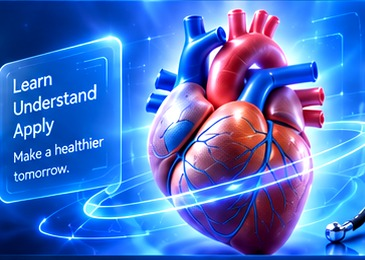

Medical Dictionary
Trusted medical knowledge for a healthier tomorrow. Simple, accurate, and always with you.

0 terms found
Browse and explore medical terms from different specialties.
Ask Suhail AI
Get definitions, explanations and study help from the built-in study assistant.
Dashboard
Your medical study workspace at a glance.
Learn medicine with visual context
Explore terms, compare concepts, listen to pronunciation and save focused study sets.
Recent activity
Selected Terms
Your focused study collection.
Bookmarks
Terms you marked for quick access.
History
Your recent term views on this device.
Medical Study Assistant
Offline Packs
Save the interface and core visual term data on this device.
Core Dictionary Pack
Caches the app shell, images and local medical term dataset.
Not downloaded
Storage & Updates
Offline data remains on this browser. You can remove it at any time.
About Suhail Medical Dictionary
A premium visual medical terminology and study workspace built for desktop and mobile learning.
Created and directed by Suhail Saeedy
Suhail Medical Dictionary is an independently designed medical-learning platform created and directed by Suhail Saeedy. The project combines structured terminology, visual study tools, responsive interaction, multilingual navigation, offline learning, secure account access and focused study workflows in one consistent product experience.
The system architecture is organized to remain maintainable and extensible: interface, authentication, dictionary data, offline caching, study tools and export features are separated into modular components so future upgrades can be added without rebuilding the entire project.
Educational purpose
The platform supports terminology learning, revision and concept exploration. It is not a diagnostic service and does not replace a qualified clinician, emergency service, or authoritative clinical guidance.
Production architecture
GitHub Pages-ready static frontend, modular CSS and JavaScript, direct Supabase Auth REST integration, Google account chooser, PWA/service-worker caching, responsive touch interactions, and an automated GitHub Actions pipeline that imports the complete official NLM MeSH 2026 Descriptor vocabulary at deployment.
Appearance & Settings
Choose your theme, language, effects and study preferences.